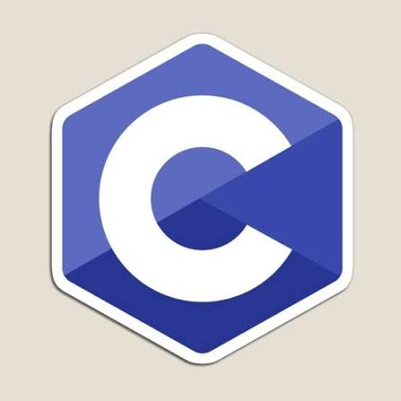

El lenguaje C es un lenguaje de programación creado en la década de 1970 por Dennis Ritchie. Es un lenguaje de propósito general que permite desarrollar programas de forma eficiente y controlar muchos aspectos del funcionamiento de una computadora.
C se caracteriza por ser rápido, eficiente y flexible. Permite trabajar directamente con la memoria mediante punteros y ofrece estructuras de control, funciones y diferentes tipos de datos para crear programas complejos.
C se utiliza para desarrollar sistemas operativos, programas de computadora, sistemas embebidos y diferentes tipos de software. También sirvió como base para la creación de otros lenguajes de programación, como C++.